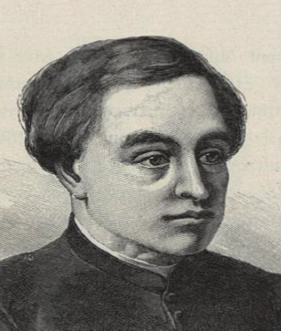
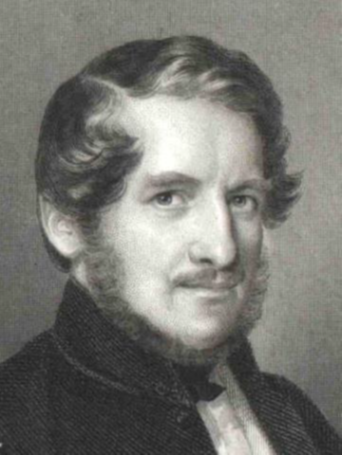

Historické okienko
Anton Bernolák
3.10.1762 - 15.1.1813 Jozef Ignác Bajza
5.3.1755 - 1.12.1836 Šľachtic, rímskokatolícky kňaz a jazykovedec. Študoval v Ružomberku, v Bratislave, v Trnave a vo Viedni. Jeho prvým pôsobiskom bolo miesto na fare v Čeklísi (dnes Bernolákovo). Od roku 1797 až do svojej smrti bol farárom v Nových Zámkoch. Vytvoril a kodifikoval prvú spisovnú verziu slovenského jazyka. V roku 1790 vydal publikáciu Gramatika slovenského jazyka. Svoje dielo zavŕšil veľkým slovníkom Slowár Slowenskí, Česko-Laťinsko-Ňemecko-Uherskí, ktorý vyšiel dvanásť rokov po jeho smrti. Mal 6 zväzkov a 5302 strán. Na jeho myšlienky nadviazalo hnutie Bernolákovcov, ktoré zohralo významnú úlohu pri formovaní slovenského národa.
Katolícky farár, spisovateľ, autor satír a epigramov. Svoje najplodnejšie literárne obdobie prežil na fare v Dolnom Dubovom (okres Trnava), kde vytvoril vôbec prvý román v slovenskej literatúre René mláďenca príhoďia skúsenosťi. Prvý zväzok knihy dostal na posúdenie imprimatur viedenskej cenzúry 11. novembra 1783 a bol vydaný v polovici roku 1784. Druhý zväzok síce obdržal imprimatur viedenskej ústrednej cenzúry 28. mája 1785 a bratislavský typograf Landerer ho začal okamžite sádzať, no konzistoriálna rada zabránila vydaniu tohto „na mnohých miestach pohoršujúceho diela“. Zachovali sa len dva nedotlačené exempláre.